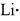
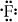
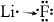
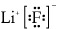
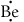
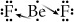
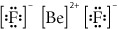

Binary ionic compounds are composed of two kinds of monatomic ions. They are the simplest type of ionic compounds. The compounds are named by writing the name of the metal as it appears on the periodic table, followed by the name of the non-metal with the ending -ide.
Examples
NaCl |
sodium chloride |
K2O |
potassium oxide |
BaF2 |
barium fluoride |
CaCl2 |
calcium chloride |
AlBr3 |
aluminium bromide |
LiH |
lithium hydride |
Take a look at lithium fluoride by using a simplified diagram showing only electrons in the outermost energy level of each atom involved.
Lithium has one valence electron to give away.
 |
Fluorine has room for one more valence electron.
 |
Lithium will give away the valence electron to the fluorine atom.
 |
The lithium ion is now held to the fluoride ion through an ionic bond.
 |
The formula of an ionic compound must have a net charge of zero. The positive charge of a lithium ion combined with the equal and opposite charge of a fluorine atom results in an electrically neutral compound.
Now take a look at beryllium fluoride.
You can see from the periodic table that the beryllium ion has a charge of 2+.
Beryllium has two valence electrons to give away.
 |
Fluorine has room for one more valence electron.
|
A fluoride ion has a charge of 1−. With a 1:1 ratio, you have Be2+ and F−.
(2+) + (1−) = 1+
This is no good. This compound is not stable because it doesn't have a net electrical charge of zero. How do you fix this? You need to have two fluoride ions to obtain an overall charge of zero.
Since beryllium has two electrons to give away, two fluorine atoms are required to accept each electron.
 |
There are now two fluoride ions held to the beryllium ion through ionic bonds.
 |
BeF2 has a net charge of zero. The beryllium ion has a charge of 2+, and the two fluoride ions each have a charge of 1−. The end result is that the entire compound is electrically neutral.
chemical formula: a series of symbols representing the atoms/ions, and their proportions, present in a pure substance
There is a quicker way to write chemical formulas from the name. This involves writing the symbols of the ions first, and then simply swapping their superscripts and writing them as subscripts.
Using the example of barium phosphide, write the two ions and include their charges.
Write the two ions and include their charges.
Ba2+ P3−
Now, simply swap the superscripts and write them as subscripts. The formula now becomes Ba3P2.